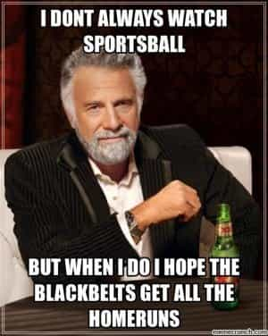
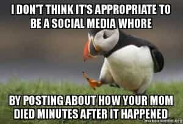

Michael is the author of Staying Married in a Degenerate Age. Follow him on Twitter or Facebook. You can read more of his writing at Honor and Daring.


All societies are run by an elite. In the past, this elite was the hereditary aristocracy. Today, the elite are extremely wealthy globalists. Here are some of the techniques they use to stay on top.
The first three items in this list are items that we have little influence over. They are determined by the government, which in turn is wholly owned by the elite. In theory, we can change these through our votes. In reality, we have almost no influence on these policies.
The last four are also wholly owned by the elite, but our use of them is within our control. If we are being controlled through them, we have no one but ourselves to blame.
One of the obvious ways that the elite control the populace is through the threat of violence. If someone from outside the ruling class tries to gain entry, he will quickly find himself either killed or imprisoned. Virtually every ruling class has used this method.
The US makes abundant use of violence to enforce the established order. Frequently the force used is excessive. For example, in 2013 a dental hygienist named Miriam Carey drove to a White House security checkpoint. When an officer told her to stop, she instead tried to make a U-turn back to the road. Officers tried to block her and she took off leading to a car chase that ended when officers shot and killed the young mother even though she posed no real threat.
The state monopoly on violence is the most acceptable form of control. When used well, it preserves order without negatively affecting most of the people. It only becomes a problem when it becomes excessive.

Governments have been using welfare to placate the unwashed masses for thousands of years. During that last days of the Roman Republic, politicians provided bread to poor voters in order to buy their votes.
Unfortunately, the vote buying scheme did not last forever. Once the people figured out that they could vote for “free stuff” for themselves, the Republic became unmanageable. After a lot of political upheaval, this eventually required that a strong dictator in the form of Julius Caesar rise to power.
In our own day, governments provide free food, housing, and even cell phones to the poor to buy their votes and keep them from causing trouble. Don’t think for a minute that when you hear Hillary Clinton propose another handout that she actually has a shred of concern for her fellow citizens. It is still a method of control and vote buying.
Taxes used to really anger Americans
The elite use tax policy to prevent others from becoming wealthy and thus entering the ranks of the elite themselves. In the US, the wealthiest 1% pays very little in taxes because the majority of their income derives from capital gains, which are taxed at a much lower rate than ordinary income.
Ironically, Democrats who want to tax high wage earners in the name of “sticking it to the rich” are in reality perpetuating the entrenched elite of the super rich. To foster greater economic mobility, the tax system should be made less progressive with the goal being to lower taxes on ordinary income.

Karl Marx famously said that religion is the opiate of the masses. Perhaps that was true in Marx’s day but it is definitely not true now. Today, religion plays a minor role in the lives of most people. Rather, the more powerful opiate in the lives of modern men is watching sports.
There are whole segments of the male (and increasingly the female) populace who spend Saturdays and Sundays glued to the TV watching their favorite college and professional sports teams. And it is not just mere entertainment. People take their sports so seriously that they may get depressed if their team loses an important game.
Sports are a multibillion dollar industry in the US and it is all put on by the elites who are wealthy enough to own sports teams. Even college sports are sponsored by the wealthy trustees of universities.
The way to avoid being trapped by the spectator sports distraction is to put it in its proper perspective. While there is nothing wrong with watching a game on the weekend, there is no reason to buy lots of paraphernalia or to waste time memorizing statistics. Why get emotionally involved over the battle of two corporations? Also, it is better to participate in sports directly rather than watching somebody else do it. That is also good advice for the next distraction which is…
Starting in the 1950s, pornographers waged a three-decade long battle to overturn or weaken US obscenity laws. They were successful. With the advent of the internet, porn became ubiquitous. While libertarians may celebrate this as the triumph of personal freedom, the reality is that it has become one of the most powerful forms of control of the masses.
I don’t have to tell any man how potent the sex drive is. We find the visual stimulation of porn extremely addicting. Some studies show that at least half of all men are addicted. I think the percentage is much higher.
Using porn is a huge time waster. Rather than accomplishing something useful, some men spend an hour or two a day trying to find exciting images. That’s time that would be better put to use lifting weights, learning a martial art, meeting girls, fathering a family, or starting a company.
But porn is more than a time suck. It also takes away a man’s edge. It tricks his mind into believing that he has become the emperor of China with 300 vaginas ready to meet his every need. In other words, using porn makes a man complacent. You can see this in the herbivore men of Japan who consider it easier to sit at home and wank instead of finding a wife or achieving great things.
Whether it was intentional or not, porn has turned into one of the most effective forms of control of the masses. If we are all busy spanking our brains out, we are not going to notice the fact that our government has turned into a plutocracy. We are not going to care that we are being treated like cattle to make our masters even richer.
The most popular post on my blog is the very first one I wrote. The topic is what I learned from watching the television show Naked and Afraid. While I think the post has a beneficial message, my weightier posts get much less traffic. The primary reason for the popularity of my post is because it concerns a TV show. Posts on ROK that comment on movies are similarly very popular.
Like sports, there is nothing wrong with enjoying television, film, or video games when it is done in moderation. But popular entertainment is almost always laced with messages that try to advance the progressive agenda. And like porn or sports, getting too involved with entertainment can blind us to what is happening in the real world.
How do you know if you are addicted to entertainment? Here is a simple test. If you are a grown man, and you felt a strong compulsion to go see the latest Star Wars movie, you are addicted to entertainment. The next time a blockbuster rolls around, wait until it comes out on video.

When it is not being censored by the elites, social media can be an extremely powerful tool that we can exploit to bring back the patriarchy. Unfortunately, 99% of people don’t use it as a tool for good. They use it to status whore. Women are the guiltiest users but men do it as well posting pictures of their scotch or barbecue techniques.
The best fix for social media is to use it with awareness. If you find yourself slipping into status whoring or getting involved with pointless arguments, drop it and do something useful instead.
Aristotle teaches that true freedom is not the license to do whatever we please. True freedom is the ability to act in accordance with reason. If we are unable to do what is good, we are slaves no matter how much empowering language we use to dress up the fact of our servitude.
Liberating ourselves from elite control may not topple them in the short term, but it will make our individual lives better. That alone makes it worth the effort.
 If you like this article and are concerned about the future of the Western world, check out Roosh's book Free Speech Isn't Free. It gives an inside look to how the globalist establishment is attempting to marginalize masculine men with a leftist agenda that promotes censorship, feminism, and sterility. It also shares key knowledge and tools that you can use to defend yourself against social justice attacks. Click here to learn more about the book. Your support will help maintain our operation.
If you like this article and are concerned about the future of the Western world, check out Roosh's book Free Speech Isn't Free. It gives an inside look to how the globalist establishment is attempting to marginalize masculine men with a leftist agenda that promotes censorship, feminism, and sterility. It also shares key knowledge and tools that you can use to defend yourself against social justice attacks. Click here to learn more about the book. Your support will help maintain our operation.
Read More: How Elites Are Getting Rich From Moving Third-World Immigrants Into American Suburbs